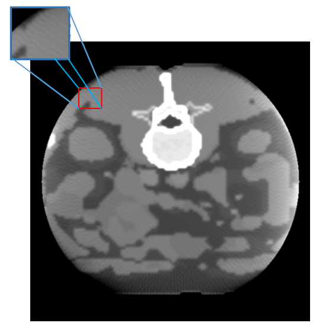
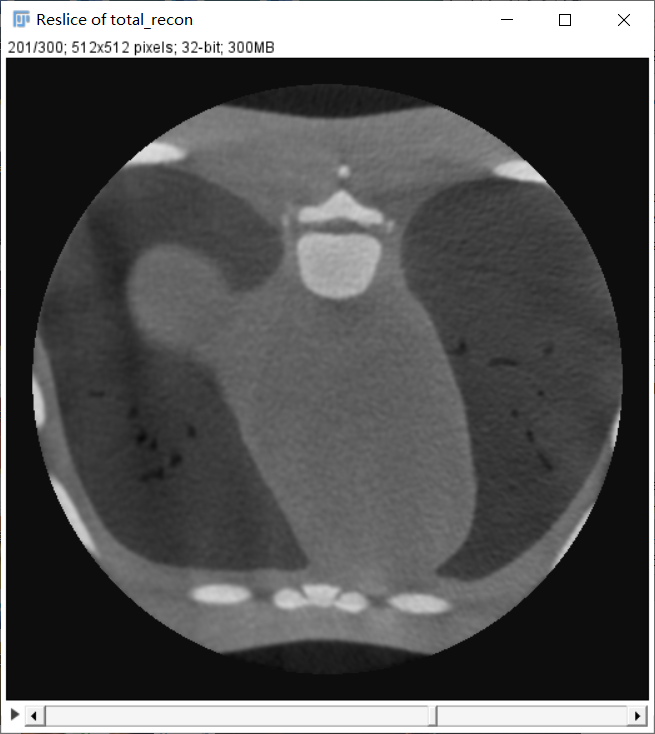
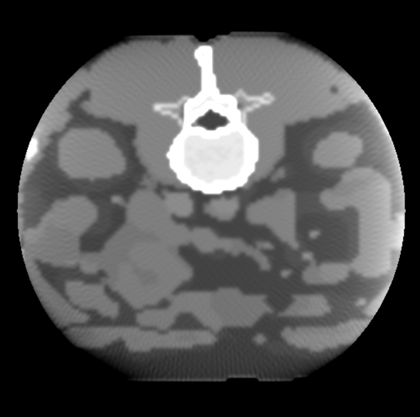
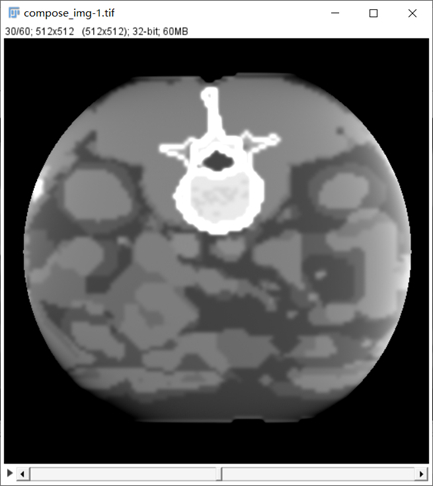
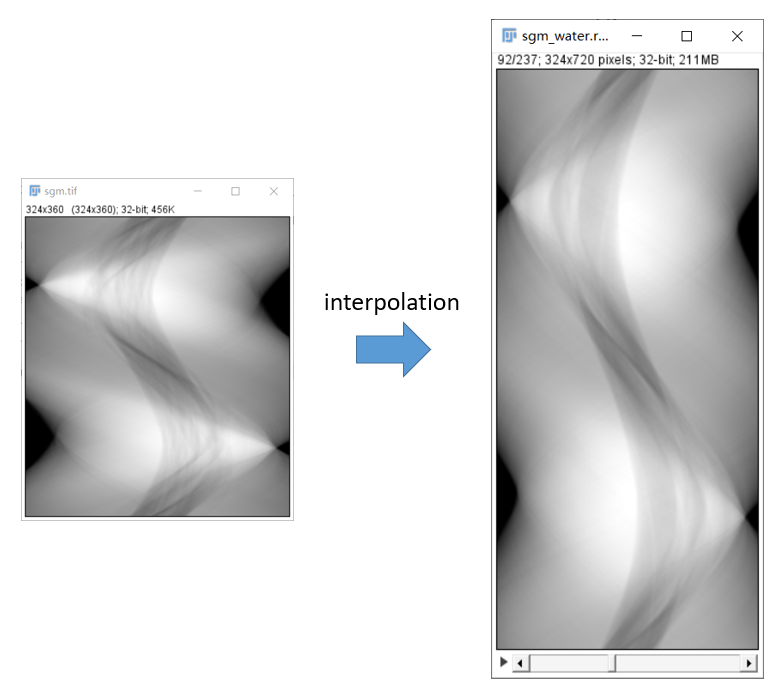
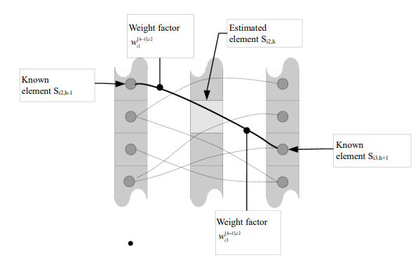
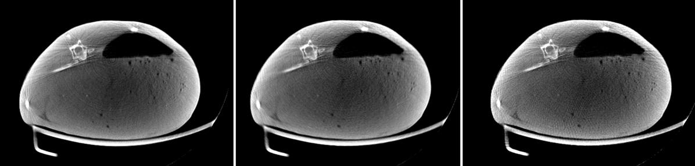

有限角伪影 (Limited view artifact)
1. 伪影的表现形式
有限角伪影有两种类型：
-
稀疏视角 (Sparse view)：如图1. 左，表现为从中心向四周辐射的条带状细线。
-
有限角度 (Limited angle)：如图1. 右，表现为横穿视野 FOV 的暗状条带。
 
2. 伪影的产生原因
稀疏视角 (Sparse view)
- 虽然投影范围达到了360°，但是每张投影之间间隔角度过大，导致 FBP 重建时，反向涂抹间隔较大，最终造成条带状细线。
-
上图是一度一投影的重建结果。事实上，一般 CT 投影间距会小于 1°，也就是采用 400-800 个投影角做重建。有限角伪影往往发生在模拟实验中，或是有低剂量需求，减少投影数的场景下发生。
-
另外，在低剂量下，或高散射比 scatter primary ratio (SPR, 即散射比不带散射的投影值 \(\frac{I_s}{I_p}\) ) 下，重建图像中的噪声会掩盖有限角伪影表现。在这种情况下，应优先矫正最影响图像质量的伪影。
有限角度 (Limited angle)
- 有限角度的暗状条带主要是使用 FDK 重建算法导致的。FDK 本身是不精确的快速重建算法，远离探测器平面所在方向、有限角度投影都会使 FDK 伪影更加严重。
注意
以上两者伪影产生的原因都是正弦图数据量不足导致的，其中以稀疏视角伪影处理研究较多，以下有限角伪影统指稀疏视角伪影。
3. 矫正方案
方案1. 增加真实投影数量
最直接的方法就是增加投影数量，增加真实数据的投影数量，让重建的条带状细线结合的更加紧密，从而减轻有限角伪影。下图是用 720 个投影角重建的结果，其他参数不变，在同样分辨率下，有限角伪影几乎不可见。
 
方案2. 迭代重建
迭代重建能够自适应的消除或减轻图像中的部分伪影，包括但不限于有限角伪影，低剂量噪声，杯状伪影等。
- 不过迭代重建方案往往需要在参数上精心选择，且高质量图像需要时间迭代，临床应用中相对较少。
- 不仅如此，在真实投影下，迭代重建需要对每张投影做几何校正，以防投影反投影中由于几何偏差带来的图像退化问题。
下表为使用 TIGRE 迭代重建某目标对比，具有一定参考价值。
| 算法 | OS-SART | OS-SART-TV | SART | SART-TV | SIRT | ISTA | FISTA |
|---|---|---|---|---|---|---|---|
| 速度 | 中 | 中 | 差 | 差 | 优 | 优 | 优 |
| 质量 | 优 | 优 | 优 | 差 | 差 | 差 | 差 |
| 算法 | MLEM | ASD-POCS | OS-ASD-POCS | AWASD-POCS | OS-AWASD-POCS | PCSD | CGLS |
|---|---|---|---|---|---|---|---|
| 速度 | 优 | 差 | 中 | 差 | 差 | 差 | 中 |
| 质量 | 差 | 中 | 差 | 中 | 中 | 差 | 中 |
方案3. 正弦图插值
当有条件限制，不能做更多投影数量时，有另一个思考角度。即对正弦图做高度方向插值，如图3. 左，相当于在真实投影之间补充虚拟投影，从而达到增加投影数的目的，减轻有限角伪影。
插值的方法多种多样，如直接使用双线性插值，或使用带有医学图像先验的正弦图插值方式，如图3. 右1。
 
- 如下图所示左，中，右分别为在50kVp下，兔子的 400 投影角，200投影角正弦插值到400投影角，以及200投影角重建。其中正弦图的插值方式采用双线性插值简单实现。

注意
毕竟增加的投影角并不是真实数据，加之使用双线性插值，会使得重建图像整体质量有一定下降，双线性插值这种图像处理方案在医学图像领域并不完全适用。
方案4. DL介入
在方案3. 的基础上，使用神经网络赋予一定权重插值正弦图，已有不少学者进行相关研究，成果请移步最新学术期刊。
4. 代码实现
| 有限角伪影矫正关键代码 | |
|---|---|
1 | |
完整实现 在这里
[注]：以上图片来自 ICRP 110 数字体模投影，模拟投影以及小动物 CT，仅供学习参考
-
M. Kalke and S. Siltanen, "Sinogram Interpolation Method for Sparse-Angle Tomography," Applied Mathematics, Vol. 5 No. 3, 2014, pp. 423-441. doi: 10.4236/am.2014.53043. ↩